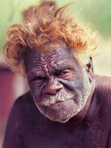
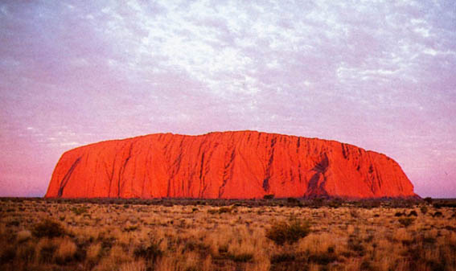
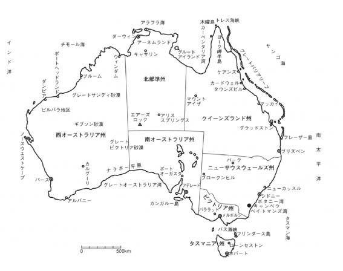
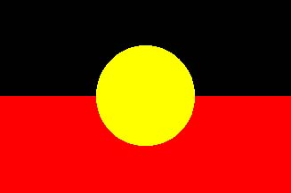
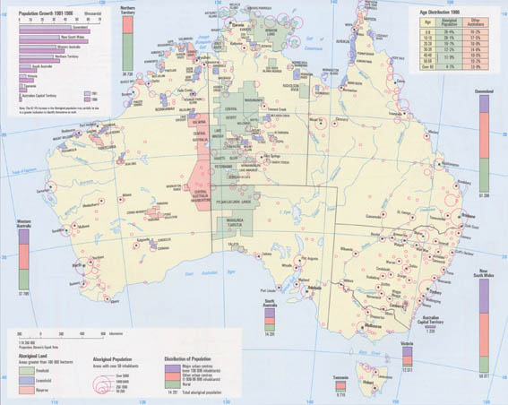

|
はじめに ２００３年３月 船越真梨 .
2000年世界のスポーツの祭典であるオリンピックがオーストラリアのシドニ
ーで華々しく開会した。開会式の中心ともいわれる聖火の点灯。誰が聖火を
点灯するのか。それは開催国であるオーストラリア国民はもちろん世界中の
注目の的だった。オーストラリア、白人とたくさんの移民が住む多文化主義
国家。そして先住民族、アボリジニーが暮らす国。開会式ではさまざまなオ
ーストラリア国民の演技が披露された。もちろんその中には先住民であるア
ボリジニーの踊りも披露された。開会式も終わりに近づきいよいよ聖火の点
灯だ。聖火は歴代の陸上選手の間でリレーして運ばれた。最後にその聖火を
手にして聖火台に点灯するのは一体誰なのか。観客、そして世界中の関心が
高まった。そしてその大舞台に姿を現したのは先住民族アボリジニー出身の
陸上選手、キャシー・フリーマンだった。
図１：アボリジニーの男性  時代の流れで失いかけてしまったアボリジニーの「文化」。その「文化」とは？オーストラリアにはさまざまな自然の遺跡がある。世界遺産に登録されているエ アーズロックはアボリジニーのアナング族の聖地だ。エアーズロックは一方面か らの写真でしか知られていないが、実際は広大な一枚岩でその様々な岩場には伝 説や神話が継承されている。そして今も祈りの神聖な場として使われている。そ こにはアボリジニーとオーストラリアの広大な土地の間には何か強い関係がある ような気がした。アボリジニーとその土地の強いつながりとは一体何なのだろうか？ 私はアボリジニーの神話とオーストラリアの大地との関係、そして白人の到来以 来のアボリジニーが人として認められるまでの長い歴史に興味をもった。彼らは どんな生き方をし、どんな考え方を持っているのだろうか？私は様々なアボリジ ニーの神話を読み、彼らの歴史を調べ、今現在オーストラリアで彼らがどのよう な立場にいるのか、これらをまとめて、オーストラリアの先住民であるアボリジ ニーの全体像をまとめてみたいと思う。 図２：アボリジニー、アナング族の聖地ウルル（英語名エアーズロック）  ＜資料１＞オーストラリア地名  ＜資料２＞アボリジニーの旗  赤は大地の色、黒はその上にいるアボリジニーの肌の色、そして黄色は太陽を表す。 ＜資料３＞都市別アボリジニーの分布  |